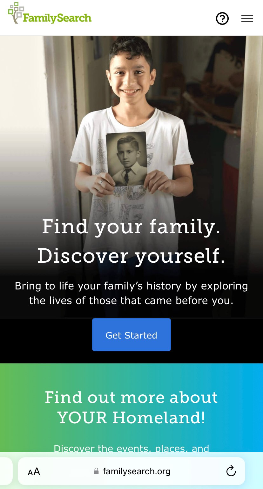

Rule of Thirds
Shangri-la Hotels
Shangri-La HotelsThe Shangri-la Hotel website is an example of an application of the rule of thirds. The rule of thirds is one of the compositional rules/guidelines that applies to landscape, street photography, pet photography, and portrait photography. This rule recommends dividing the image into thirds and placing your subject into one of those sides, instead of in the center. Composing your subject this way helps create a stronger image.
White Space and Clean Design
Impact Plus
The Impact Learning CenterThe Impact Plus website has taken advantage of the white space and created a clean design. It is probably because it is a training website, they used clear images, compination of different sizes of fonts, and used only three colors - white, black, and cyan.
PARC: Contrast
FamilySearch
FamilySearchThe FamilySearch.org is a perfect example of using contrast in their website. Contrast is designing a distinct difference between foreground and background colors in order to enhance readability. Contrast does not only deal with colors but also blends into visual hierarchy of font sizes, image placement, and content.